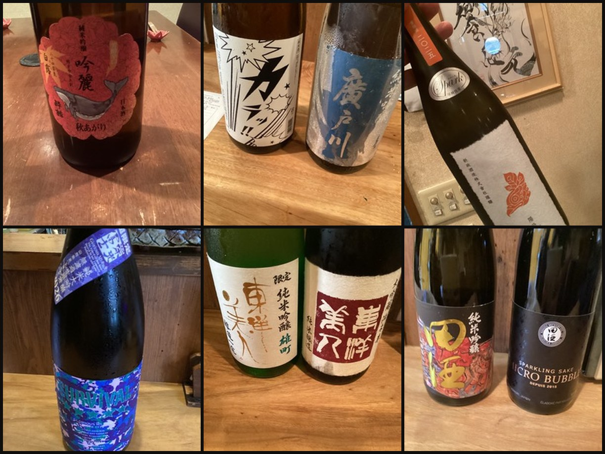

WHY SAKE AT KYŌŌ HAJIME日本酒の数を競うのではなく、
日本酒の数を競うのではなく、
一杯の選び方にこだわる。
丸太町には日本酒を楽しめる店があります。饗応 元が目指すのは、その中で「日本酒のことを相談でき、料理まで含めて選んでもらえる店」として覚えていただくこと。
酒匠の店主が、お客様の好みやその日の料理を聞きながら、香り・甘辛・酸・旨味などのバランスを考えてご提案します。銘柄を知らなくても構いません。
01
料理から選ぶ
旬の魚、馬刺し、黒毛和牛など、その日の料理に合わせて日本酒を考えます。
02
好みから選ぶ
「甘めが好き」「すっきり飲みたい」など、詳しい知識がなくても大丈夫です。
03
飲む順番まで考える
最初の一杯から食中酒、料理の余韻まで、飲み進め方も含めてご提案します。

FOR BEGINNERS日本酒に詳しくなくても、
日本酒に詳しくなくても、
むしろ歓迎です。
「日本酒は難しい」「銘柄を知らないと注文しにくい」という必要はありません。料理の好みや普段飲むお酒を教えていただければ、そこから選択肢を絞ります。
日本酒だけでなく、焼酎やワインなども含め、その夜に合う飲み方を一緒に考えます。
MARUTAMACHI NIGHT
丸太町で、20:30〜22:30からの食事と日本酒を。
饗応 元は丸太町駅から徒歩3分。18:00開店、最終入店は23:00です。23:00までの電話予約等で、ご予約・営業状況に応じて最長翌2:00まで対応します。
仕事終わりに一杯料理と日本酒を落ち着いて。
20:30〜22:30からのご来店軽いアテから、しっかり夕食まで。
日本酒初心者店主に相談して選びたい方に。
少人数の会食14席の小さな空間で。
QUESTIONS
丸太町で日本酒を飲む前によくある質問
日本酒に詳しくなくても大丈夫ですか？
はい。好みや料理を伺い、酒匠の店主が選び方をご案内します。
日本酒だけの利用はできますか？
料理を楽しむ方だけでなく、お酒を中心に楽しみたい方にも対応しています。
20:30〜22:30からでも食事と日本酒を楽しめますか？
はい。軽いアテと一杯から、しっかりした夕食までご利用いただけます。最終入店は23:00です。23:00までの電話予約等で、ご予約・営業状況に応じて最長翌2:00まで対応します。
丸太町駅からどのくらいですか？
京都市営地下鉄・丸太町駅から徒歩3分です。
席数はどのくらいですか？
14席の小さな店です。少人数で落ち着いて日本酒と料理を楽しみたい夜に向いています。